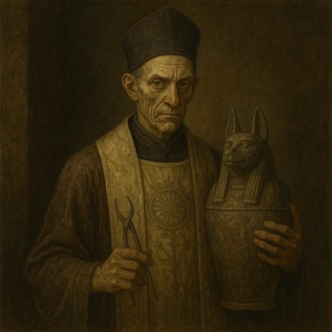

Le Desséché

Domaine et saison
- Il règne sur l'hiver.
- Dieu de la souffrance et de la mort.
- Symbole sacré : une faux ébréchée, ou un crâne sans dents.
Dogme et mythes
- Ses fidèles disent qu'il est le plus ancien des dieux. Si ses premiers croyants n'ont laissé aucune trace, c'est qu'ils ont tous disparu il y a des millénaires, par amour de la mort et dégoût de la vie.
- Sa doctrine glorifie la douleur. La maladie et la privation rendent sage et sauvent l'âme. Le plaisir et l'abondance enferment l'esprit dans la chair.
- L'être parfait est le mort, car il a quitté son corps. Les morts sont donc les plus nobles des créatures : les vivants doivent respecter leurs volontés et les servir avec humilité.
- Selon une légende, une langue très ancienne, le sinaséen, était parlée par ceux qui ont fondé le temple du Desséché au Mons Dolorossus.
Le prophète Ocann le Dévoreur
- Ocann était un demi-elfe d'Aeyellessee, beau et brillant, mais rongé par l'amertume. Il partit dans les montagnes et devint le chef des orques Uruk Maug.
- Les orques le menèrent à un temple très ancien, creusé dans le Mons Dolorossus. Il n'y trouva que des cendres et des pyramides de crânes.
- Il resta assis dix ans sur le seuil du temple, à méditer. Il en sortit pâle et maigre, et se proclama le prophète du Desséché.
- Revenu parmi les elfes et les hommes, il convertit une grande partie des humains de Transborée. Sa prédication déchira Aeyellessee et mena à la guerre.
- Il disparut en -548, à la bataille de la plaine de Funaria. Ses fidèles disent que le dieu l'a emporté.
Fête
- La Fête des Retrouvailles, au solstice d'hiver.
- Il n'y a aucune fête dans les rues. Chacun s'enferme chez soi et prie le dieu d'être clément.
- Cette nuit-là, dit-on, les morts qui veulent une vengeance, une réparation ou le respect d'un testament oublié se lèvent et rendent visite aux vivants.
- Les vrais revenants sont rares. Mais il arrive que des prêtres du Desséché rendent par magie un semblant de vie à quelques morts tourmentés.
- La vraie fête a lieu le lendemain à l'aube : on se réjouit d'avoir survécu à la nuit.
Clergé
- Les novices sont les Fossoyeurs.
- Les prêtres consacrés sont les Embaumeurs. Ils servent dans un monastère ou tiennent une chapelle. Ils dirigent souvent les enterrements.
- Les Nécrophores dirigent une nécropole ou un monastère.
- Les Archontes formaient un collège de quatre membres, la plus haute autorité du culte. En 701 CR, après la guerre des Grands Vassaux, un édit commun du duc de Bromaël, du Sénat de Ciudalia, des échevins de la Marche Franche et des grands prêtres des trois autres dieux du cycle a interdit d'élever un prêtre du Desséché à ce rang. En principe, il n'y a donc plus d'archontes dans le Vieux Royaume.
Vie des prêtres
- Une prière chaque jour à minuit, couché à plat ventre, le front dans la poussière, les bras en croix.
- Chaque semaine, le sacrifice d'un jeune animal, ou une offrande d'un gobelet de sang humain.
- Ils ne mangent que de la viande.
- Ils font les rites funéraires et gardent les cimetières contre les pillards de tombes.
- Ils veillent à ce que les dernières volontés des morts soient respectées : héritages, mais aussi vengeances.
- Lors des serments solennels, ils sont les garants de la parole donnée.
Les archontes et le Roi-Idiot
- À la mort du roi Maddan IV, les quatre archontes, dont Cloaphilès et Insanias, ont gardé en non-vie la reine morte jusqu'à la naissance de son fils. Cet enfant, ni vivant ni mort, est devenu Leodegar VII, le Roi-Idiot.
- Pour le mettre sur le trône, les archontes ont levé des armées de morts-vivants et se sont alliés aux orques. Cette guerre a ruiné le royaume de Leomance et créé les Landes Grises.
- L'archonte Insanias a été tué à la bataille de la Listrelle, en 699 CR.
À Bourg-Preux
- Le Bosquet du Desséché, hors des remparts à l'est, est le cimetière de la ville : un bois sombre aux arbres tordus et aux grands cyprès.
- Au centre, quatre obélisques noirs gravés de chants en sinaséen, reliés par des chaînes rouillées, entourent un caveau à demi enterré : c'est le temple.
- Sous la voûte pend le sarcophage de fer de l'archonte Insanias, tenu par des chaînes. On n'ose pas le poser au sol, de peur que sa corruption ne gagne la terre de la Marche Franche.
- La statue du dieu est une haute silhouette maigre et encapuchonnée, qui serre son manteau d'une griffe décharnée.
- Le prêtre du temple est Nefas l'Embaumeur.
Dans la campagne
- Les héros ont vaincu l'archonte Cloaphilès, avec l'aide du démon Epharel.
- Le Roi-Idiot, maintenu en non-vie, s'est décomposé pour de bon quand le Voïvode Brancovan lui a pris sa couronne.
- Les âmes de l'armée des morts ont été de nouveau accueillies par le « Dieu souterrain », et Kaelis leur a donné les rites funéraires. La légende ne dit pas si ce dieu est le Desséché.